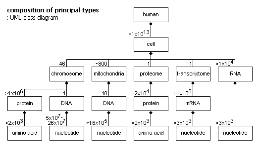
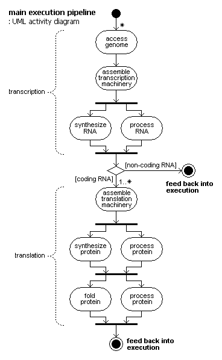

This article is a tutorial summary of basic genetics, for programmers. Only the human system is examined, and chemistry is abstracted. The first parts are factual, the last part is comment. (1700 words)
The principal logical structure of a human is defined by its genome. It is connected to the logical structure of other molecular and atomic objects and processes.
The genome is made of DNA. DNA is a one-dimensional chain of nucleotides — the bits of genome data. Nucleotide 'bits' are quaternary — radix 4 — rather than binary.
Total data size is about 3.2x109 nucleotides. This is roughly 800MB binary data, or about 1.2 CDs, but it compresses well — down to about 200MB. The standard metric is 'bp' – base pair, or 'b' – base.
Differences between individual genomes are mostly single nucleotide polymorphisms — SNPs. SNPs average 1 per 2K nucleotides, totalling over 1.4 million.
In operation the genome is almost exclusively only read, but there is no basic write protection. An exception is immune system cells, which edit their genome copy to make varieties of combinations of certain sub-sequences. Genome mutability is, however, fundamental to evolution.
The genome has about 1x1013 copies — one in each cell, except for cells of a few certain types that have no copy.
Each nucleotide in the DNA chain is attached to a complementary pair — the chain is two parallel chains.
The genome is divided into nuclear and mitochondrial parts. The nuclear part contains > 99%, the mitochondrial part < 1%. The nuclear part is divided into 24 linear parts — chromosomes. The mitochondrial part is circular, and exists in multiple copies, in mitochondria.
Instance nesting tree:
human (~6x10^9)
cell (< 1x10^13)
nucleus (1)
chromosome (46 (22 are duplicated))
DNA string (1)
nucleotide (5x10^7 – 26x10^7)
mitochondria (~800)
DNA circle (10)
nucleotide (16569)

DNA has various forms along its length — three adjustments of helix proportion, and some higher level packing structures. Some of these physical arrangements do have data content. They may affect processing, be writeable, or inheritable. Such 'epigenetic' properties are unclear.
A chromosome is a packed structure of DNA and protein. The principal protein component is the nucleosome. This is made of eight protein molecules in a barrel-like form, with a protein structure attachment. Nucleosomes are arranged along the DNA at 190–220 nucleotide intervals. The DNA is wound twice around each nucleosome, 140–150 nucleotides around, with 50–70 between.
That level of packing is then packed into a higher level structure which is unclear. This is the dominant form during interphase — the duration between cell divisions.
An important and distinctive region of the chromosome is the centromere. It has a particular position in each chromosome, is about 1Mb long, mostly composed of 171b repetitive sequences, and has special proteins. It is involved with mechanical processes of cell division.
Another important and distinctive region is the telomere. It is made of 100s of copies of a particular 6b sub-sequence, with special proteins attached. It acts as an end marker so repair operations do not treat chromosome ends as breakages.
The primary component of the genome is the gene. A gene is a sub-sequence that can be translated into the next principal logical objects: RNA and protein. There are 20000–30000 genes in the genome. The largest gene is 80780 nucleotides, or just less than 20KB binary data.
Most genes are discontinuous: exons are the primary informational parts, introns are the interruptions. There are an average of nine exons per gene, and a maximum known of 178 exons.
Other sub-sequences are gene related: regulatory are somewhat like a 'header' for a gene, gene segments are variously combinable into genes, pseudogenes are non-functional genes.
The remaining classifications of genome sub-sequence are mainly kinds of repeating elements. Interspersed repeats are sequences that have copies scattered across the genome. Tandem repeats are sequences that have copies adjacent in variable length arrays.
Genome sequence categorisation:
genic (40%)
genes
exons
>99% genes specify proteins
<1% genes specify non-coding RNA
introns
regulatory
gene segments
pseudogenes
non-genic (60%)
interspersed repeats (44%)
tandem repeats (3%)
other (16%)
Protein coding genes functional categorisation:
Tandem repeats have three classifications according to length.
Genome replication machinery is not so accurate when replicating lengths of short unit repeats. This has two complementary implications:
Interspersed repeats are mostly mobile sequences, which are very similar to viruses, with various degrees of inactivation, simplification or missing parts. They are 0.3Kb–7Kb and based on a simple set of components: terminal repeats at each end, replication enzyme genes, core protein genes, envelope protein genes.
There are two types of movement: transposition and retrotransposition, with corresponding objects: transposons and retroelements. Transposition copies or moves (deleting the original) from one place to another. Retrotransposition transcribes from one place into some RNA, then reverse transcribes into some DNA, then integrates into another place.
The overall term for execution is genome expression. It is based on highly parallel execution of a basic pipeline.
The pipeline builds other logical objects from genes. Those next principal objects are RNA and protein. The collection of all mRNA (a type of RNA) in a cell is the transcriptome, and the collection of all protein in a cell is the proteome.
These are the cell object state. They are passed in initially by cell division, and maintained and changed by the degradation and re-synthesis of execution.
Cell state is complex: the transcriptome is up to 1000s of different mRNA types, evenly represented — each type usually < 1% of instances. The proteome is 10000–20000 different protein types, and 2x104 – 1x108 instances. The most abundant 10–20% of types are almost standard across cells, specialized cell proteins are usually sparsely present. Proteins determine a cells capability and have many functions.
The pipeline and sub-pipelines:
genome expression
transcription
access of genome
assembly of transcription machinery
synthesis of RNA
processing of RNA
translation
assembly of translation machinery
synthesis of protein
processing of protein
folding of protein
degradation of RNA and protein
(in parallel to the rest)
Genes are copied by transcription into RNA.
RNA is a variant of DNA, with one different nucleotide type, and molecular differences that make the chain less stable. Classifications of RNA:
coding (4%) mRNA — to be translated into protein non-coding (96%) rRNA — for protein building machinery tRNA — for protein building machinery snRNA — for mRNA processing snoRNA — for rRNA processing scRNA — various things, some unclear
Steps of transcription:
mRNA is degraded after a few hours.
mRNA is copied by translation into protein.
Protein is a one-dimensional chain of amino acids, usually < 2000 long. Amino acids are parameterised molecules — mostly the same with a variable part. There is a core vocabulary of 20 amino acids.
Steps of translation:
Proteins can have four levels of structure, in an improper hierarchy — since properties of levels affect non-adjacent levels too:
Living things are digital: they are composed of elements that have discrete repeatable causal behaviours. But the digital structure is mixed with a physical medium. In many places physical properties affect digital processing. That mixture is unlike the clear separation found in a computer.
There are multiple levels of digital structure: the principal level — the genomic. A lower level — the atomic (or molecular, although 'molecule' is a vague concept). A higher level — the cellular. But the levels do not form a stack of simply increasing complexity — unlike computer software generally.
The classes and objects of the system are fairly distinct, but their interactions are very complex. The structure is dominated by decentralization, multiplicity, iteration — ultimately emergent behaviour. A different balance than the control of software systems.
The genome is rather small considering its function, and compared to large computer software. It is much simpler than its product individuals. Much of the complexity is an expression of the rich physical medium, as d'Arcy Thompson pondered.
It is important that the genome is not designed, but evolved: there is confusion, non-sense, redundancy. How is it understandable? not like artificial digital structures, but surely it is related. It is a valid task of computer science to provide a theoretical basis for reverse-engineering and understanding such natural digital systems.